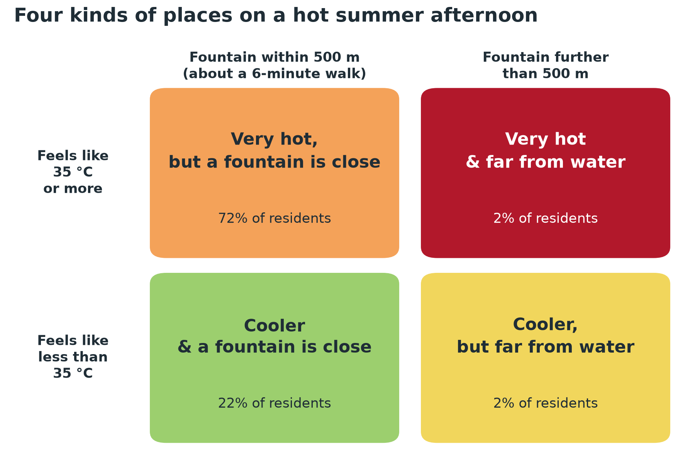

← Maps
Behind the scenes
For everyone who wants to know how we made the maps in City of Fountains: data, methods, choices and limits.
1. How hot does it feel? (PET)
Air temperature alone does not tell you how hot a place feels. We use the Physiologically Equivalent Temperature (PET) from the climate model of the Canton of Zurich. PET combines air temperature, sun and heat radiation from surfaces, wind and humidity, and translates them into the air temperature of a standard indoor room that would put the same strain on the body.
PET is measured in °C. It is not an index from 0 to 1. A PET of 36 °C means: your body feels as stressed as it would in a room at 36 °C.
The map shows the situation on a hot, sunny summer afternoon (14:00, “status quo” scenario). We use the usual PET heat-stress scale (Matzarakis & Mayer 1996; Höppe 1999):
| PET | Heat stress | Our wording |
|---|
| below 29 °C | none to slight | Pleasant to warm |
| 29–35 °C | moderate | Hot |
| 35–41 °C | strong | Very hot |
| 41 °C and more | extreme | Extremely hot |
2. The four kinds of places
We combined two simple rules: Is it very hot? (PET 35 °C or more, the start of strong heat stress) and Is the nearest public drinking fountain more than 500 m away? (about a 6-minute walk at 80 m per minute).

3. How we did it
- Grid. We covered Zurich with a grid of 100 × 100 m squares (lake squares removed).
- Heat. For every square we averaged the PET raster (QGIS Zonal Statistics, mean).
- Fountains. We merged the city’s fountain register with OpenStreetMap drinking-water points and kept the public fountains with drinking water (821 points) for the analysis.
- Footpaths. We downloaded walkable ways from OpenStreetMap with QuickOSM (footways, paths, steps, pedestrian and residential streets etc.; excluding ways tagged
foot=no, access=private).
- Walking distance. With the QGIS plugin QNEAT3 we computed the shortest walk along this network from the centre of every square to every public drinking fountain (origin–destination matrix) and kept the shortest one.
- People. We added the number of residents from the city’s hectare-level population statistics (31.12.2025) to each square. Hectares with very few residents have their exact number withheld for privacy; we counted them as 0.
- Interactive maps. The web maps were built in Python with geopandas and folium.
4. What our maps cannot show
- Missing fountains. Fountains at SBB train stations and in some private places are not in our data, although many people can use them.
- No route found. For 192 squares (about 7,000 residents, 2%) no walking route could be calculated, e.g. at the Zoo (not publicly accessible) or where the path data has gaps. They are grey on the map and not counted as “far”.
- Where people are during the day. We only know where people live, not where they work, shop or spend a hot afternoon.
- Not every fountain helps everyone. A fountain may be switched off, hard to find, or difficult to use, e.g. with a wheelchair.
- Thresholds are a choice. 35 °C and 500 m are reasonable but not the only possible limits; other values would move some squares into another group.
5. Data
6. Literature
- Höppe, P. (1999). The physiological equivalent temperature – a universal index for the biometeorological assessment of the thermal environment. Int J Biometeorol 43, 71–75. doi:10.1007/s004840050118
- Kaelin, K. (2024). Wärmebelastung im Kanton Zürich. Statistisches Amt des Kantons Zürich.
- Matzarakis, A. & Mayer, H. (1996). Another kind of environmental stress: thermal stress. WHO Newsletter 18, 7–10.
- Ragettli, M. S. & Röösli, M. (2021). Hitze-Massnahmen-Toolbox 2021. Swiss TPH, Basel, on behalf of the Federal Office of Public Health.
- Ragettli, M. S. & Röösli, M. (2021). Hitzebedingte Sterblichkeit im Sommer 2019. Primary and Hospital Care. doi:10.4414/phc-d.2021.10296
Michelle Götz, Raphael Knecht, Janine Roos, Johanna Schweizer – GEO410 Urban Waterscapes, University of Zurich, 2026.